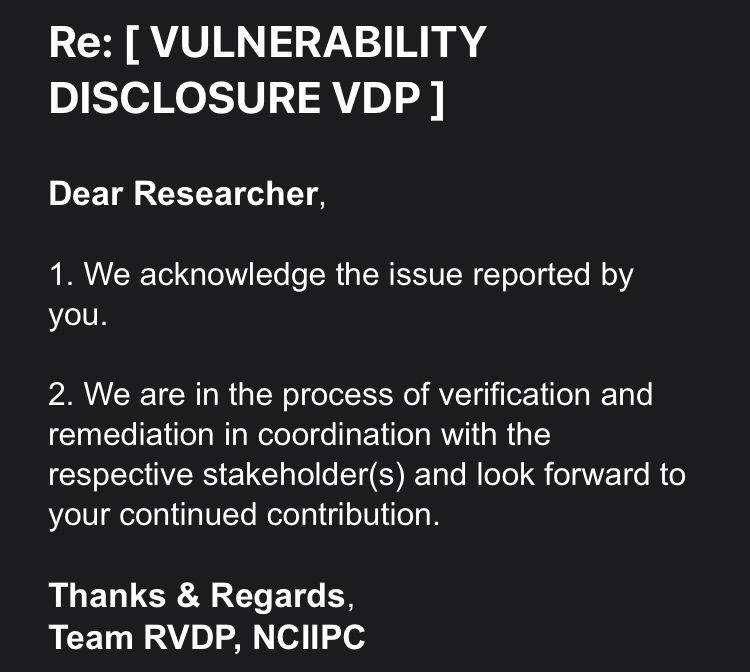
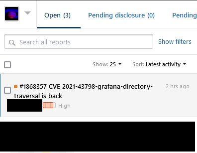
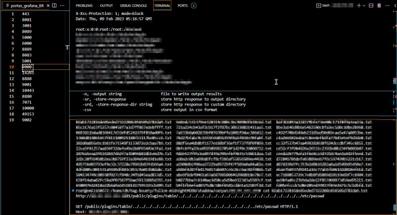

Sobre
Estudante de Engenharia Elétrica e graduado em Segurança da Informação pela PUC Minas, com perfil investigativo e criativo que integra raciocínio técnico a uma compreensão profunda de comportamento humano e sistemas complexos. Opera de forma independente, movido por autonomia, resolução de problemas e desenvolvimento contínuo — não como método, mas como identidade.
Electrical Engineering student and Information Security graduate from PUC Minas, with an investigative and creative profile that integrates technical reasoning with a deep understanding of human behavior and complex systems. Operates independently, driven by autonomy, problem-solving, and continuous development — not as method, but as identity.
Estudiante de Ingeniería Eléctrica y graduado en Seguridad de la Información por PUC Minas, con un perfil investigativo y creativo que integra razonamiento técnico con una comprensión profunda del comportamiento humano y los sistemas complejos. Actúa de forma independiente, impulsado por la autonomía, la resolución de problemas y el desarrollo continuo — no como método, sino como identidad.
Destaques
Mentalidade Investigativa
Exploração profunda de sistemas, análise de tráfego e reconhecimento de padrões como abordagem natural de resolução de problemas.
Execução Independente
Aprendizado autodidata e execução autônoma — construindo competência sem depender de estruturas externas.
Disciplina & Consistência
Prática esportiva e estudo contínuo como pilares de desenvolvimento — boxe chinês, tênis e musculação integrados à rotina.
Pensamento Transversal
Integração entre tecnologia, comportamento humano e criatividade — conectando domínios para gerar soluções originais.
Adaptabilidade Multilíngue
Comunicação fluente em português, inglês e espanhol — com interesse ativo em chinês e coreano.
Experiência
Estudo independente de sistemas e aplicações com foco em compreensão comportamental, análise de tráfego e identificação de padrões. Abordagem orientada à curiosidade e à exploração prática, desenvolvendo consciência sobre vulnerabilidades e dinâmicas de segurança em ambientes reais.
Independent study of systems and applications focused on behavioral understanding, traffic analysis, and pattern identification. Curiosity-driven approach oriented toward practical exploration, developing awareness of vulnerabilities and security dynamics in real-world environments.
Estudio independiente de sistemas y aplicaciones enfocado en la comprensión comportamental, análisis de tráfico e identificación de patrones. Enfoque orientado a la curiosidad y la exploración práctica, desarrollando conciencia sobre vulnerabilidades y dinámicas de seguridad en entornos reales.
Base sólida em lógica, redes, compliance e pensamento sistêmico, construída por meio de experiências práticas, certificação no Percurso de Segurança Ofensiva da WSS e graduação em Segurança da Informação pela PUC Minas. Capacidade de abstração e modelagem aplicada à resolução de problemas complexos em múltiplos domínios.
Strong foundation in logic, networking, compliance, and systems thinking, built through hands-on experience, WSS Offensive Security certification, and a degree in Information Security from PUC Minas. Abstraction and modeling capability applied to solving complex problems across multiple domains.
Base sólida en lógica, redes, cumplimiento normativo y pensamiento sistémico, construida a través de experiencia práctica, certificación en Seguridad Ofensiva de WSS y graduación en Seguridad de la Información por PUC Minas. Capacidad de abstracción y modelado aplicada a la resolución de problemas complejos en múltiples dominios.
Experiência profissional como Analista de Suporte na TOTVS — Linx, atuando no atendimento direto ao cliente com foco em resolução de problemas, comunicação clara e compreensão de necessidades em ambiente corporativo.
Professional experience as a Support Analyst at TOTVS — Linx, providing direct client assistance with a focus on problem resolution, clear communication, and understanding business needs in a corporate environment.
Experiencia profesional como Analista de Soporte en TOTVS — Linx, brindando asistencia directa al cliente con enfoque en resolución de problemas, comunicación clara y comprensión de necesidades en entorno corporativo.
Atuação como tradutor e intérprete bilateral inglês/português em contratos particulares e como colaborador em eventos como a EduX, conectando públicos de diferentes idiomas em contextos profissionais e educacionais.
Experience as a bilateral English/Portuguese translator and interpreter through private contracts and as a collaborator at events such as EduX, bridging language gaps in professional and educational contexts.
Actuación como traductor e intérprete bilateral inglés/portugués en contratos particulares y como colaborador en eventos como EduX, conectando públicos de diferentes idiomas en contextos profesionales y educativos.
Estilo de Vida
Disciplina e consistência como fundamento — não passatempos.
Idiomas
Interesses
Liderança & Iniciativa em Tecnologia
Perfil voltado à construção e fortalecimento de comunidades, com interesse em promover tecnologia de forma acessível e prática. Demonstra iniciativa em aprender de forma independente e compartilhar conhecimento, conectando pessoas através de interesses em comum dentro do ecossistema tecnológico.
Busca atuar como ponte entre tecnologia e pessoas, incentivando outros estudantes a explorarem novas ferramentas, conceitos e oportunidades dentro da área de tecnologia e inovação.
Possui disciplina, consistência e mentalidade de crescimento, aplicadas tanto no ambiente acadêmico quanto em atividades pessoais, refletindo capacidade de liderança prática e influência positiva no ambiente ao redor.
Profile oriented toward building and strengthening communities, with a strong interest in promoting technology in an accessible and practical way. Demonstrates initiative through independent learning and knowledge sharing, connecting people through shared interests within the technology ecosystem.
Seeks to act as a bridge between technology and people, encouraging other students to explore new tools, concepts, and opportunities in technology and innovation.
Shows discipline, consistency, and a growth mindset applied both academically and personally, reflecting practical leadership and positive influence within the environment.
Perfil orientado a la construcción y fortalecimiento de comunidades, con interés en promover la tecnología de forma accesible y práctica. Demuestra iniciativa mediante el aprendizaje independiente y la compartición de conocimientos, conectando personas a través de intereses comunes dentro del ecosistema tecnológico.
Busca actuar como un puente entre la tecnología y las personas, motivando a otros estudiantes a explorar nuevas herramientas, conceptos y oportunidades en tecnología e innovación.
Presenta disciplina, constancia y mentalidad de crecimiento, aplicadas tanto en el ámbito académico como personal, reflejando liderazgo práctico e influencia positiva en su entorno.
Como posso contribuir:
- Promover iniciativas tecnológicas no campus
- Organizar encontros, workshops e grupos de estudo
- Criar conteúdos simples e acessíveis sobre tecnologia
- Conectar estudantes interessados em tecnologia
Comunidade & Iniciativa
Ainda em fase inicial de exposição pública, com foco atual em desenvolvimento sólido de base técnica, disciplina e consistência.
A ausência de volume em redes sociais não representa falta de capacidade de comunicação, mas sim uma escolha estratégica de priorizar aprendizado profundo antes da amplificação.
Atualmente em transição para uma abordagem mais ativa de compartilhamento, com intenção clara de transformar aprendizado em conteúdo acessível, engajar outros estudantes através de tecnologia e construir uma comunidade baseada em prática e consistência.
Currently in an early stage of public exposure, focusing on building a strong foundation in technical knowledge, discipline, and consistency.
The lack of social media volume does not reflect a lack of communication ability, but rather a strategic choice to prioritize deep learning before amplification.
Now transitioning into a more active sharing approach, with clear intent to transform learning into accessible content, engage other students through technology, and build a community based on practice and consistency.
Actualmente en una fase inicial de exposición pública, enfocado en construir una base sólida de conocimiento técnico, disciplina y constancia.
La falta de movimiento en redes sociales no refleja falta de capacidad de comunicación, sino una decisión estratégica de priorizar el aprendizaje profundo antes de la amplificación.
En transición hacia una participación más activa, con la intención de transformar el aprendizaje en contenido accesible, involucrar a otros estudiantes mediante la tecnología y construir una comunidad basada en práctica y constancia.
Projetos & Evidências


Análise de Sistemas
Vulnerabilidades reportadas responsavelmente — NCIIPC (Governo da Índia) e HackerOne.

Reconhecimento de Padrões
Identificação em massa de comportamentos anômalos e vetores de exploração em aplicações web.
Certificados
Diploma Internacional (University of Missouri High School) e Certificado WSS — Segurança Ofensiva e Operações de Cibersegurança III (300h).